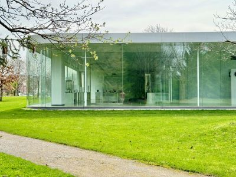
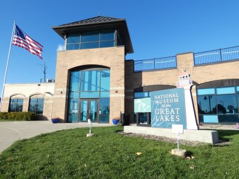

Mid-sized Great Lakes port city shaped by glassmaking, industrial logistics, and a growing arts and outdoor recreation scene along a working waterfront.
General Information
Ranger district offices generally open weekdays, 8am–4:30pm
How to Get There
From St. Louis, take I‑64 east toward southern Illinois, then use IL‑145, IL‑34, or IL‑127 to access various recreation areas and trailheads throughout the forest.
Overview
Toledo, Ohio, is a port city on the western end of Lake Erie at the mouth of the Maumee River, and it is known as the "Glass City" because of its history as a center for glassmaking and the glass industry. It is also famous for the Toledo Museum of Art, one of the best art museums in the Midwest, for the Jeep brand, which has been manufactured here for generations. Toledo is the fourth-largest city in Ohio and is a major Great Lakes port and rail and highway hub.
Visitors come to Toledo for its museums, including the Toledo Museum of Art and the Glass Pavilion, the National Museum of the Great Lakes, and the Toledo Zoo and Aquarium, which is highly regarded. The city is also a good gateway to Lake Erie, the islands of Put-in-Bay, and Cedar Point in Sandusky, and it offers affordable lodging. Its riverfront, Metroparks, and historic neighborhoods give it a relaxed, small-city feel.
History
The area was the site of the Battle of Fallen Timbers in 1794, which opened much of Ohio to American settlement, and Fort Meigs, built across the river in 1813, was an important American stronghold in the War of 1812. Toledo was founded in 1833 when two settlements merged, and it nearly went to war with Michigan in the 1835 "Toledo War" over a border dispute, which Michigan resolved by accepting the Upper Peninsula in exchange for giving up the strip. The Miami and Erie Canal and the railroads made the city a major shipping port, and the discovery of natural gas in the 1880s attracted glassmakers, including Edward Drummond Libbey and Michael Owens, who made Toledo the "Glass City." Automaking, especially Willys-Overland and the Jeep, later became an important part of the economy, and today the city is also a center for healthcare, solar technology, and education.
Sightseeing and Popular Landmarks
The Toledo Museum of Art, which has free general admission, includes the Glass Pavilion, a glass-walled building designed by SANAA with a hot shop for glassblowing demonstrations. The National Museum of the Great Lakes is on the riverfront and features the 1911 freighter Col. James M. Schoonmaker, and the Fort Meigs Historic Site in nearby Perrysburg has a reconstructed War of 1812 fort. Other attractions include the Toledo Zoo and Aquarium and the Imagination Station science center, and the Maumee River waterfront.
Culture and Museums
The Toledo Museum of Art has a collection of more than 30,000 objects, including a notable glass collection, European and American paintings, and ancient art, and it offers an Art Walk of the Glass Pavilion and hot shop. The Toledo Symphony Orchestra, the Toledo Opera, and the Valentine Theatre in downtown are part of the performing arts scene, and the Great Lakes museum covers the history of shipping and shipwrecks on the lakes. The Wildwood Preserve Metropark's Manor House and the Toledo Botanical Garden, which hosts art fairs and a summer concert series, also add to the cultural offerings.
Parks
Metroparks Toledo manages more than a dozen parks in the area, including Wildwood Preserve, Side Cut Metropark along the Maumee River, and Oak Openings Preserve, a rare oak savanna west of the city with sand dunes, rare plants, and good trails. The Toledo Botanical Garden has themed gardens and sculpture, and Maumee Bay State Park, on Lake Erie to the east, has a beach, a lodge, and a boardwalk through wetlands. The Maumee River and Lake Erie are well known for walleye fishing, and Magee Marsh and Ottawa National Wildlife Refuge nearby are among the best places in the country for spring bird migration.
Seasons and Weather
Toledo has a humid continental climate with four seasons, moderated slightly by Lake Erie. Summers are warm and humid, with highs in the 80s°F, and winters are cold and cloudy, with highs in the 30s°F and about 35 inches of snow per year on average. Spring and fall are mild but changeable, and the best time to visit is late spring through early fall, when events and boating are at their peak.
This article uses material from Wikipedia as well as information from official tourism and institutional sources. Key references include Destination Toledo, Toledo Museum of Art, National Museum of the Great Lakes, Fort Meigs Historic Site, Metroparks Toledo, and the National Weather Service Cleveland. Wikipedia material is from the articles "Toledo, Ohio" and "Toledo War", and is available under the Creative Commons Attribution-Share-Alike License 3.0.
Featured Locations

Jeff P from Berkeley, CA, USA, CC BY 2.0, via Wikimedia Commons; Image Size Adjusted
Fort Meigs Historic Site
Expansive reconstructed military fort and museum offering immersive exhibits and demonstrations focused on early 19th-century American frontier defense.
Jeff P from Berkeley, CA, USA, CC BY 2.0, via Wikimedia Commons; Image Size Adjusted
Glass Pavilion
Modernist glass structure housing a world-renowned collection of glass artworks and offering daily glassblowing demonstrations.

Jeff P from Berkeley, CA, USA, CC BY 2.0, via Wikimedia Commons; Image Size Adjusted
National Museum of the Great Lakes
Interactive maritime museum featuring historic ships, immersive exhibits, and artifacts that chronicle the rich history of the Great Lakes.
Jeff P from Berkeley, CA, USA, CC BY 2.0, via Wikimedia Commons; Image Size Adjusted
Toledo Museum of Art
Expansive fine arts museum featuring global collections, educational programs, and a renowned glass studio in a modern architectural setting.
-1000.jpg)

.jpg){kind=link}